Inhalt
Zum Anfang

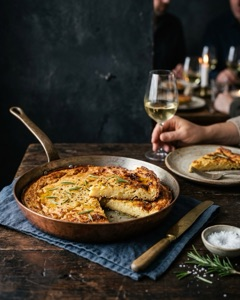
17Ligurische Farinata- 18Spicy Karottensuppe
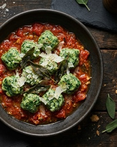
19Gnudi mit Tomatensauce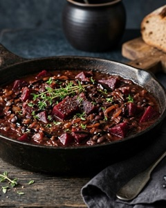
20Rote-Bete-Gulasch mit schwarzen Bohnen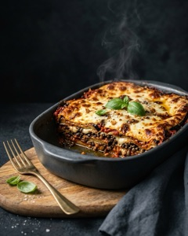
21Parmigiana mit Beluga-Linsen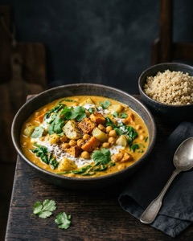
22Kohlrabi-Süßkartoffel-Curry mit Kichererbsen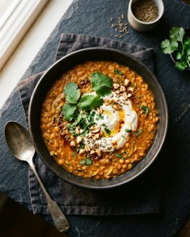
23Rotes Linsen-Dal mit Zucchini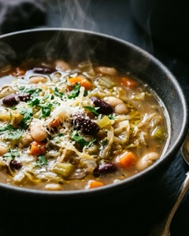
24Die Suppe der Hundertjährigen- 25Rahmensuppe
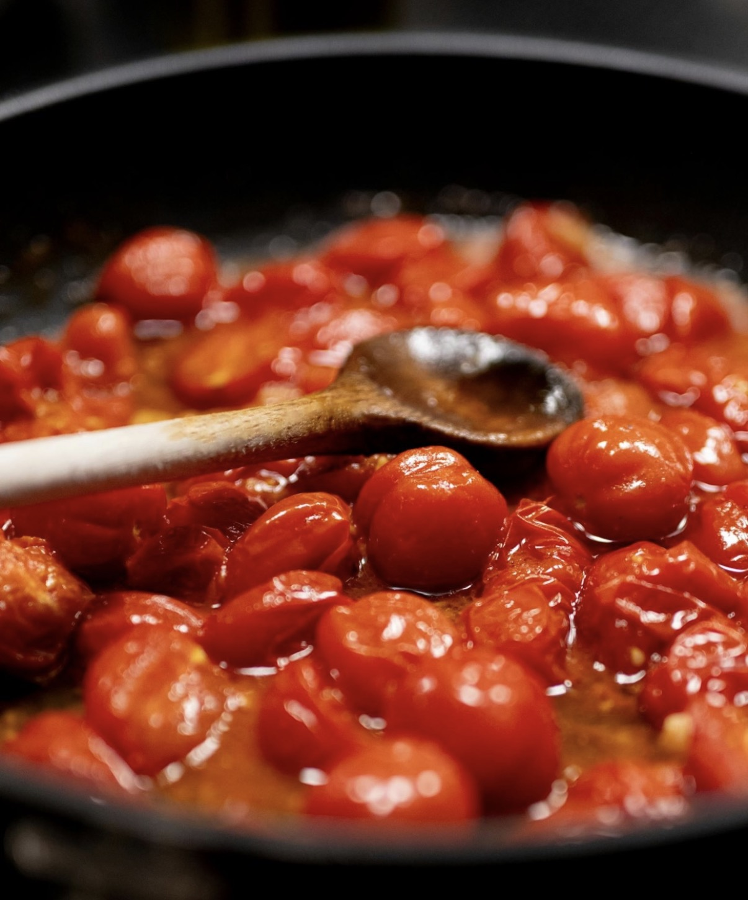
27Roja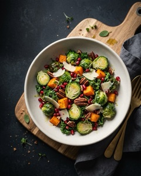
28Winterlicher Kalettes-Salat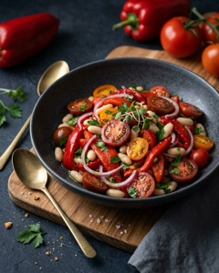
29Rosso Mediterraneo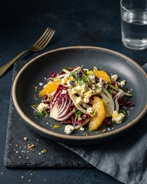
30Radicchio-Fenchel-Salat mit Orange & Feta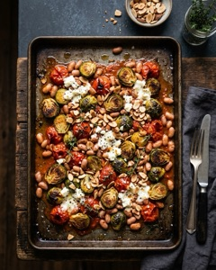
31Ofen-Rosenkohl mit Borlotti-Bohnen & Feta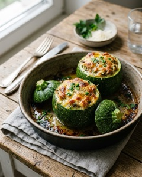
32Gefüllte runde Zucchini mit Ricotta & Thunfisch 33Lauwarmer Brokkolisalat mit Trauben-Dressing
33Lauwarmer Brokkolisalat mit Trauben-Dressing
Bonus
Zum Schluss